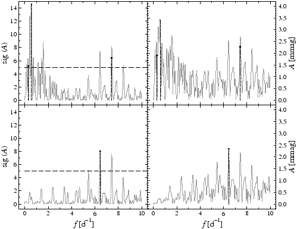

If the mean magnitude of a light curve is desired to be adjusted to zero for each night, or if the data are obtained from more than one site, one may perform an individual zero-mean correction for subsets of the total time series. This is achieved by the keyword col:ssid in the .ini file. This keyword is followed by the index of the column which shall be assigned to subset identifiers and may be multiply defined, if more than one subset identifier column is given. Subset identifiers may be arbitrary alpha-numeric strings.
If col:ssid is specified, SIGSPEC treats all lines in the dataset with equal subset identifiers as individual subsets, for each of which a zero-mean correction is performed. Subsequently, SIGSPEC performs the appropriate statistical calculations, taking into account that the zero-mean correction for subsets diminishes the degrees of freedom for noise.
If more than one subset column is specified, data points are considered to belong to the same subset, if all corresponding subset identifiers are equal.
Example. The sample project subsets contains a dataset with subset identifiers in column 3. The input time series subsets.dat represents the sampling of IC4996#89 (V), and the magnitudes were synthesized by adding
The resulting light curve is displayed in Fig.5, displaying the input signal as a solid line and the data points including the nightly offsets as open dots. Fig.6 compares the resulting frequency domain output (a closeup for frequencies below 10 cycles per day) with and without employing the weights. If no subdivision according to the subset identifiers is performed, the spectra show a peak at 6.4 cycles per day plus several spurious peaks at frequencies below 2 cycles per day, which are due to the interpretation of the nightly shifts as signal in the 1-cycle-per-day domain and also harmonics. Consequently, SIGSPEC identifies two additional significant signal components at low frequencies:
Consequently, SIGSPEC identifies two additional significant signal components at low frequencies:
1 freq 0.575256 sig 14.5784 rms 6.0813 csig 14.5784
2 freq 7.43176 sig 6.39232 rms 5.51956 csig 6.39232
3 freq 0.286066 sig 5.21585 rms 5.29531 csig 5.18785
4 freq 75.1664 sig 3.39587 rms 5.12278 csig 3.38892
Column 3 in the time series input file weights.dat contains characters A to J uniquely assigned to each night. Employing the subsets column eliminates the low-frequency artefacts, and SIGSPEC provides the component at 6.4 cycles per day as the only significant signal:
1 freq 6.4376 sig 8.20485 rms 5.2253 csig 8.20485
2 freq 75.1661 sig 3.70924 rms 4.95954 csig 3.70922



Next: Lower frequency limit
Up: Input
Previous: Time series columns containing
Contents
Piet Reegen
2009-09-23